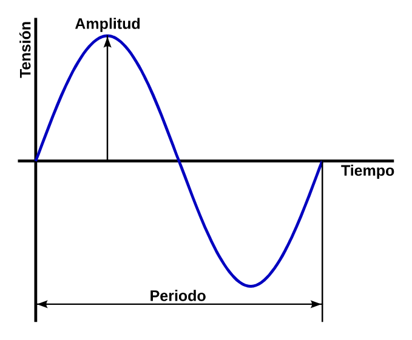

10. Tensió alternativa¶
Una font de ** tensió alternativa ** també anomenada ** corrent altern ** és un generador que produeix tensions positives i tensions negatives alternativament, diverses vegades per segon.
La forma d'ona més comuna de la tensió és el ** sinusoïdal **, que es pot veure a la imatge següent:
{kind=link}

Forma d'ona d'una tensió alternativa i els seus paràmetres.¶
La tensió no varia bruscament, però està canviant d’un valor zero a un pic d’amplitud positiu, descendeix de nou per valorar zero, canvia a un valor màxim d’amplitud negativa i torna a ascendir per valorar zero de nou.
A la següent simulació podem veure un generador de tensió alternatiu que alimenta una resistència. Els electrons avancen i enrere. La tensió superior del generador canvia de positiu (verd) a negatiu (vermell) també alternativament. Finalment, a l’oscil·loscopi inferior podem veure la forma d’ona ** sinusoïdal ** de tensió:
Amplitud Pico y Amplitud efectiva¶
L’amplitud d’una tensió alternativa és el màxim valor o valor de valor que té aquesta tensió.
Però normalment l’amplitud d’un senyal alternatiu no es defineix pel seu valor màxim, sinó pel seu valor efectiu. El valor ** efectiu ** d’una tensió alternativa és aquell valor de tensió contínua que produeix el mateix efecte sobre una resistència que la tensió alternativa.
Això significa que la tensió de la xarxa elèctrica, que és de 230 volts efectius, escalfa una resistència com una tensió contínua de 230 volts.
La relació entre el valor màxim i el valor efectiu és la següent:
Així que dir que la tensió de la casa té 230 volts efectius és el mateix que dir que té 230 * 1.4142 = 325,26 volts de pic.
A la simulació següent podem veure un generador de tensió alternatiu de 7.071 volts màxims que produeix el mateix efecte sobre una làmpada que el generador de corrent continu de 5 volts:
Període i freqüència¶
El període és el temps que triga a l’ona alternativa per completar un cicle complet. Aquest temps sol ser petit, de l’ordre dels mil·lisegons, de manera que normalment parla normalment del seu valor invers, que és la freqüència.
La freqüència es defineix com el nombre de cicles que completa l’ona alternativa en un segon. La xarxa elèctrica europea és de 50 eines (cicles per segon). La xarxa elèctrica de la majoria dels Estats Units és de 60 habitatges.
La fórmula que relaciona el període i la freqüència és la següent:
Les magnituds i les unitats són les següents:
F = Freqüència en Hercios [HZ]
P = període en segons [s]
Exercicis¶
Què és una font de tensió alternativa? Com es diu també?
Dibuixeu un senyal de tensió alternativa i dibuixeu -hi els seus paràmetres principals.
Dibuixa una font de tensió alternativa connectada a una resistència.
Quina és la tensió efectiva d’un generador de tensió alternatiu i com es calcula a partir de la tensió màxima?
Completa la taula següent amb els valors màxims i els valors de tensió alternatius efectius que falten.
Tensió efectiva [V] Tensió màxima [V] 230 volts 17 volts 125 volts 29 volts 5 volts Completa la taula següent amb la freqüència i el període de valors de temps que falten.
Freqüència [HZ] Període [S] 50 Herciose 0,020 segons 60 RTES 400 HERCIOSE 0,100 segons 0,012 segons 0,001 segons